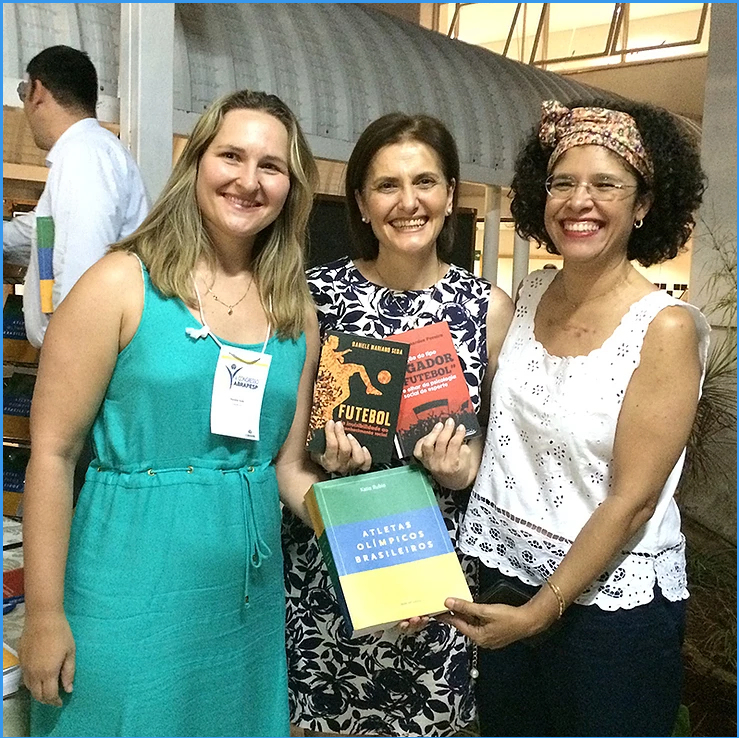
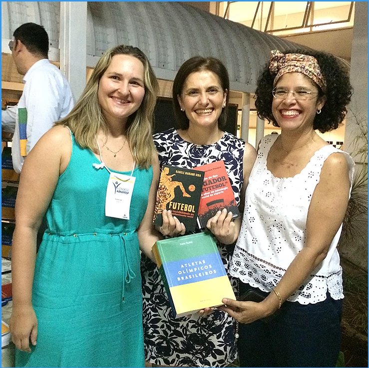
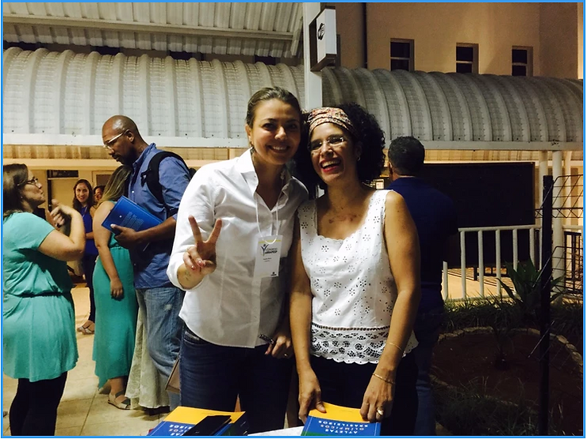

As professoras Adriana Bernardes, Katia Rubio e Daniela Mariano promovem noite de autógrafos no V Congresso da Abrapesp

Uma noite de autógrafos e um encontro de amigos, fãs, ídolos, regado com sorrisos e selfies marcaram o fim do segundo dia do V Congresso da Associação Brasileira de Psicologia do Esporte. Autografando suas obras estavam: a Profa. Dra. Adriana Bernardes Pereira – livro Construção do tipo “Jogador de Futebol” sob o olhar da psicologia social do esporte, lançado em 2015, pela Editora APPRIS; Profa. Ma. Daniela Mariano Seda com Futebol: da invisibilidade ao reconhecimento social, publicado 2014, pela mesma editora; e a Profa. Dra. Katia Rubio, seu trabalho Atletas Olímpicos Brasileiros, publicado 2015 pela Editora Sesi-SP.

Entre acadêmicos e estudantes, campeões olímpicos como Leila Barros, Ricarda Lima, Hugo Parise, Gilberto, Toninho, Hudson, entre outros posaram para foto histórica.